Topic 1
Exercise
Here’s a simple exercise with an empty code chunk provided for entering the answer.
Write the R code required to add two plus two:
Exercise with Code
Here’s an exercise with some prepopulated code as well as exercise.lines = 5 to provide a bit more initial room to work.
Now write a function that adds any two numbers and then call it:
add <- function() {
}Topic 2
Exercise with Hint
Here’s an exercise where the chunk is pre-evaulated via the exercise.eval option (so the user can see the default output we’d like them to customize). We also add a “hint” to the correct solution via the chunk immediate below labeled print-limit-hint.
Modify the following code to limit the number of rows printed to 5:
mtcarshead(mtcars)Quiz
You can include any number of single or multiple choice questions as a quiz. Use the question function to define a question and the quiz function for grouping multiple questions together.
Some questions to verify that you understand the purposes of various base and recommended R packages:
Data Visualization
<img src=“Data_Visualization-figure/Circos.png” style=“background:none; border:none; box-shadow:none;height=”200“; width=”200“;”><img src=“Data_Visualization-figure/INRES_Logo.png” style=“background:none; border:none; box-shadow:none;height=”100“; width=”100“;”><img src=“Data_Visualization-figure/Uni_Bonn_Picture.png” style=“background:none; border:none; box-shadow:none;height=”200“; width=”200“;”><img src=“Data_Visualization-figure/ZEF_Logo.png” style=“background:none; border:none; box-shadow:none;height=”200“; width=”200“;”>
# Data visualization: getting stuck
Open RStudio

type ‘?’ in R console with function, package or data name
Add “R” to a search with a copy of an error message
Help > Cheatsheets > Data Visualization with ggplot2
# Data visualization: getting help
- Many talented programmers
- Some scan the web and answer issues

 Hadley Wickham
Hadley Wickham  Yihui Xie
Yihui Xie
# Getting your data in R
Load data <img src=“Data_Visualization-figure/R_logo.png” style=“background:none; border:none; box-shadow:none;height=”10%“; width=”10%“;”>
Load the data
Keep your data in the same folder structure as .RProj
at or below the level of .RProj
Creating a barplot in base R
R has several systems for making graphs
- Base R
- Create a barplot with the
table()andbarplot()functions
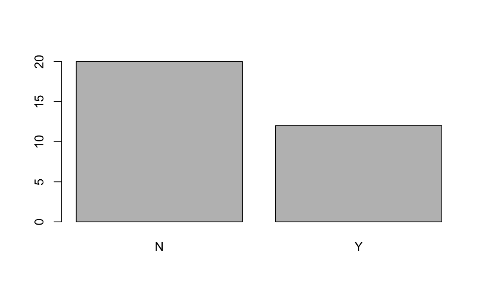 Bar plot of number of observations of binary data related to academic parents
ggplot2: ‘Grammar of Graphics’ Overview

Many libraries and functions for graphs in R…
ggplot2 is one of the most elegant and most versatile.
ggplot implements the grammar of graphics to describe and build graphs.
Do more and do it faster by learning one system and applying it in many places.
Learn more about ggplot2 in “The Layered Grammar of Graphics”
ggplot2: names and email
Example from your data
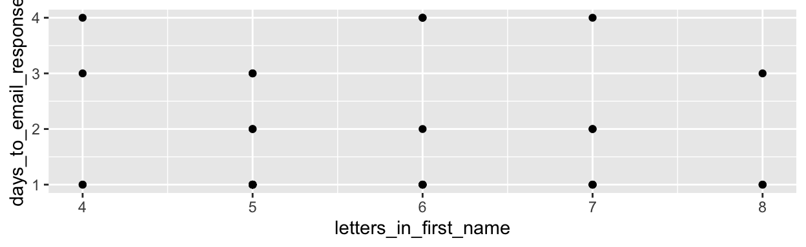 Scatterplot of days to email response as a function of the letters in your first name
Want to understand how all the pieces fit together? See the R for Data Science book: http://r4ds.had.co.nz/
# ggplot2: add color and size
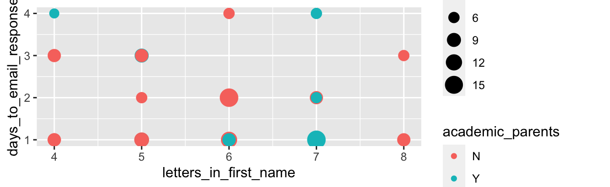 Scatterplot of letters in your first name as a function of days to email response with colors representing binary data related to academic parents and working hours per day as bubble sizes.
Make more graphs
ggplot2: iris data
Example from Anderson’s iris data set
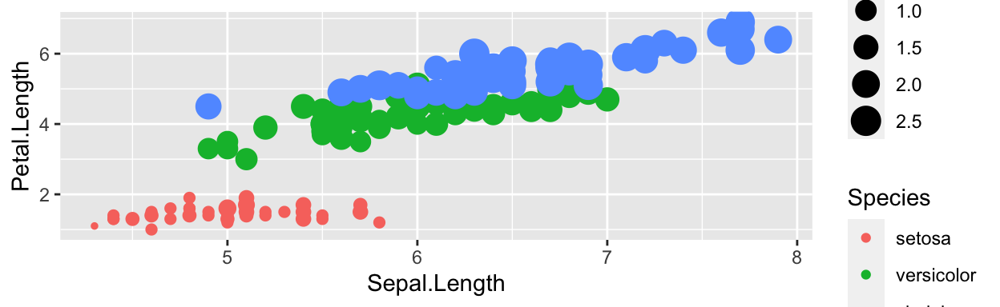 Scatterplot of iris petal length as a function of sepal length with colors representing iris species and petal width as bubble sizes.
ggplot2: diamonds price
ggplot accepts formula arguments such as log
ggplot(data = diamonds, aes(x=carat, y=price, alpha = 0.2)) + geom_point()ggplot(data = diamonds, aes(x=log(carat), y= log(price), alpha = 0.2)) + geom_point()##
## Attaching package: 'gridExtra'## The following object is masked from 'package:dplyr':
##
## combine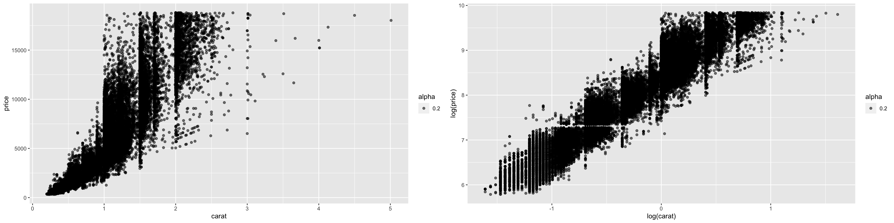
ggplot2: diamonds color shape
## Selecting by z## Warning: Using shapes for an ordinal variable is not advised## Selecting by z## Warning: Using shapes for an ordinal variable is not advised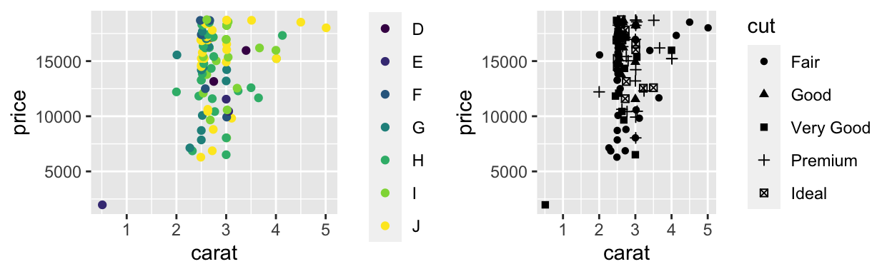
ggplot2: set parameters
Set parameters manually with I() Inhibit Interpretation / Conversion of Objects
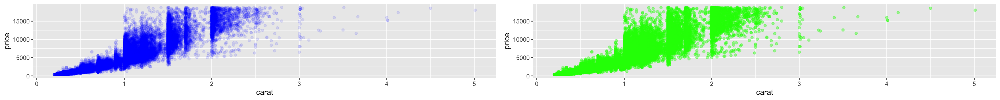
ggplot2: geom options
With “geom” different types of plots can be defined e.g. points, line, boxplot, path, smooth. These can also be combined.
ggplot(data=dsmall, aes(x=carat, y=price))+
geom_point()+
geom_smooth()## `geom_smooth()` using method = 'loess' and formula 'y ~ x'
## `geom_smooth()` using method = 'loess' and formula 'y ~ x'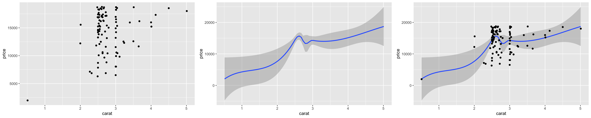
ggplot2: smooth function
geom_smooth() selects a smoothing method based on the data. Use method = to specify your preferred smoothing method.
ggplot(data=dsmall, aes(x=carat, y=price))+ geom_point()+ geom_smooth()
ggplot(data=diamonds, aes(x=carat, y=price))+ geom_point()+
geom_smooth(method = 'glm')## `geom_smooth()` using method = 'loess' and formula 'y ~ x'## `geom_smooth()` using method = 'gam' and formula 'y ~ s(x, bs = "cs")'## `geom_smooth()` using formula 'y ~ x'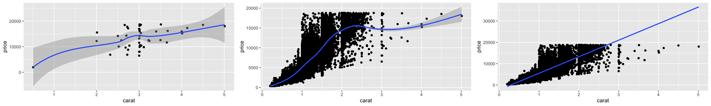 ggplot2 lines and smoothing options
ggplot2: boxplots
- Boxplots can be displayed through
geom_boxplot().
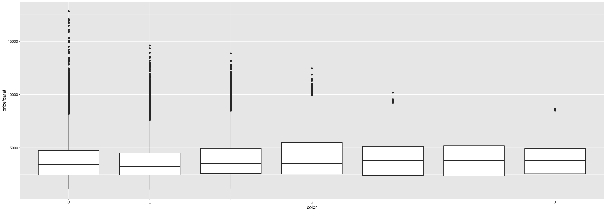
ggplot2: jitter points
- Jittered plots
geom_jitter()show all points.
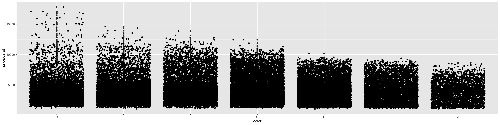
ggplot2: adding alpha
In case of overplotting changing alpha can help. 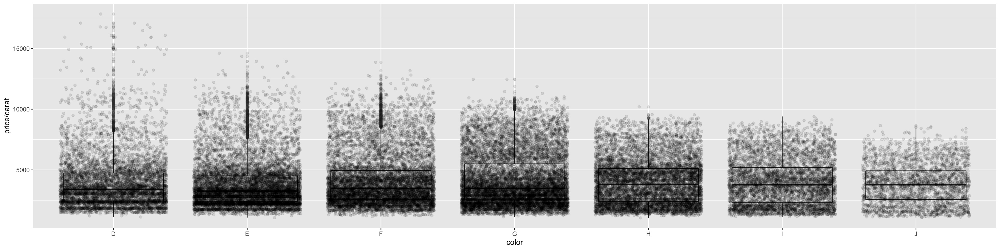
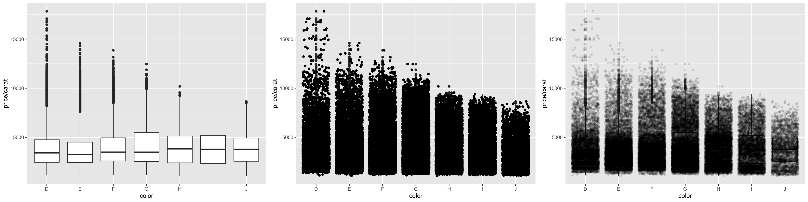
ggplot2: geom_histogram
ggplot(data = diamonds, aes(x=carat)) +
geom_density()
ggplot(data = diamonds, aes(x=carat, color = color)) +
geom_density()
ggplot(data = diamonds, aes(x=carat, color = color, alpha=I(0.3))) +
geom_density()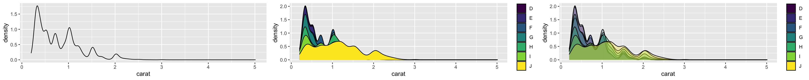 ggplot2 histograms
ggplot2: subset
Use factor to subset your data.
ggplot(data = mpg, aes(x=displ, y=hwy, color = cyl))+
geom_point()+
geom_smooth(method="lm")
ggplot(data = mpg, aes(x=displ, y=hwy, color = factor(cyl)))+
geom_point()+
geom_smooth(method="lm")## `geom_smooth()` using formula 'y ~ x'
## `geom_smooth()` using formula 'y ~ x'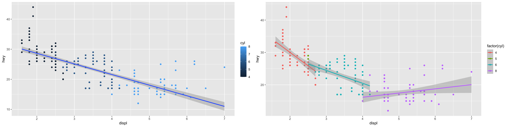 ggplot2 subset with smooth line
# ggplot2: “slow ggplotting”

for aes() in ggplot()
- using fewer functions; example - using labs() to add a title instead of ggtitle()
- using functions multiple times; example aes(x = var1) + aes(y = var2) rather than aes(x = var1, y = var2)
- using base R functions and tidyverse functions. For other packages, the :: style to call them
- write out arguments (no shortcuts) aes(x = gdppercap) not aes(gdppercap)
https://evamaerey.github.io/ggplot_flipbook/ggplot_flipbook_xaringan.html#1
# ggplot2: not slow example
ggplot code in non-slow fashion 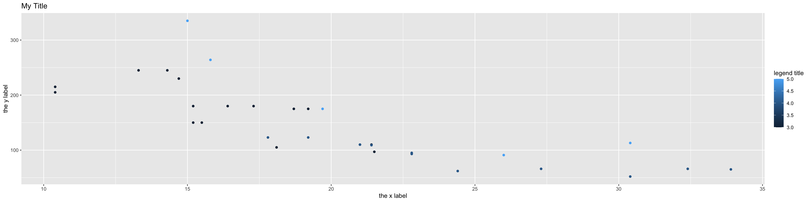
# ggplot2: slow ggplotting example
incremental: true right: 80%
‘Slow ggplotting’ version for the same plot 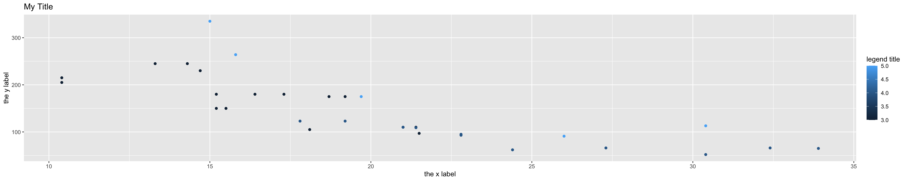
https://evamaerey.github.io/ggplot_flipbook/ggplot_flipbook_xaringan.html#1
# ggplot2: geom_tile
- Use
dplyr,ggplot2andreshape2
part_data<-select_if(participants_data, is.numeric)
cormat <- round(cor(part_data), 1)
melted_cormat <- melt(cormat)
ggplot(data = melted_cormat, aes(x=Var1,
y=Var2, fill=value)) +
geom_tile()##
## Attaching package: 'reshape2'## The following object is masked from 'package:tidyr':
##
## smiths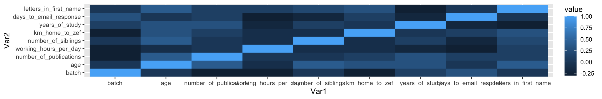
Export Figures

png(file = "cortile.png", width = 7, height = 6, units = "in", res = 300)
ggplot(data = melted_cormat, aes(x = Var1, y = Var2, fill = value)) + geom_tile() + theme(axis.text.x = element_text(angle = 45, hjust = 1))
dev.off()- Check with journal about size, resolution etc.
gganimate: datasauRus

- Use
datasauRus,ggplot2andgganimate
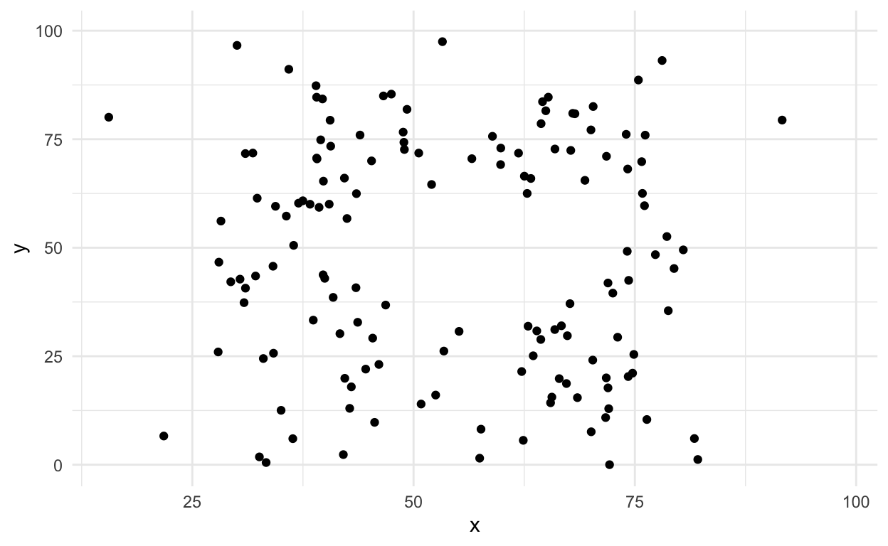
gganimate: Datasaurus Dozen

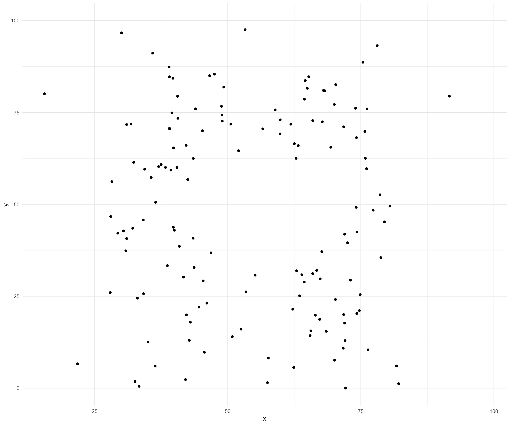
gganimate: diamonds carat

- Use
tidyverse,ggplot2andgganimate

Tasks for the afternoon: Basic
Test your new skills
- Use scatter plots, barcharts and boxplots
- Vary the sample and run the same analysis and plots
- Save your most interesting figure and share it with us tomorrow
# Tasks for the afternoon: Advanced
Your turn to perform
- Import data from an external source (e.g. FAO, World Bank)
- Display those data in an interactive plot
- Play around with the design
- Export your most interesting figure and share it with us